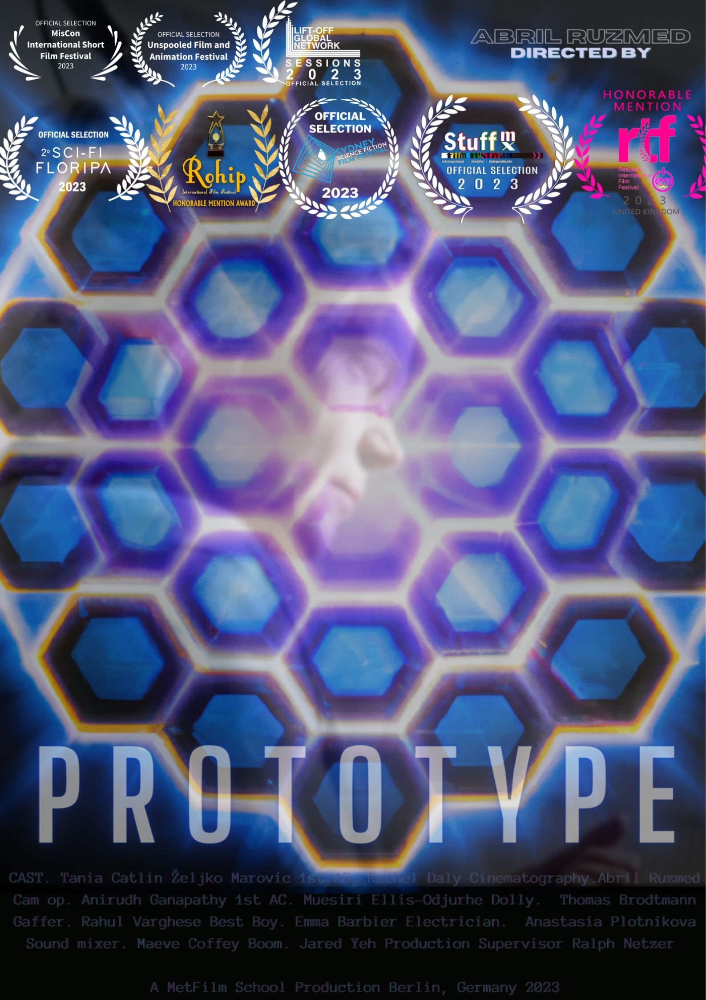
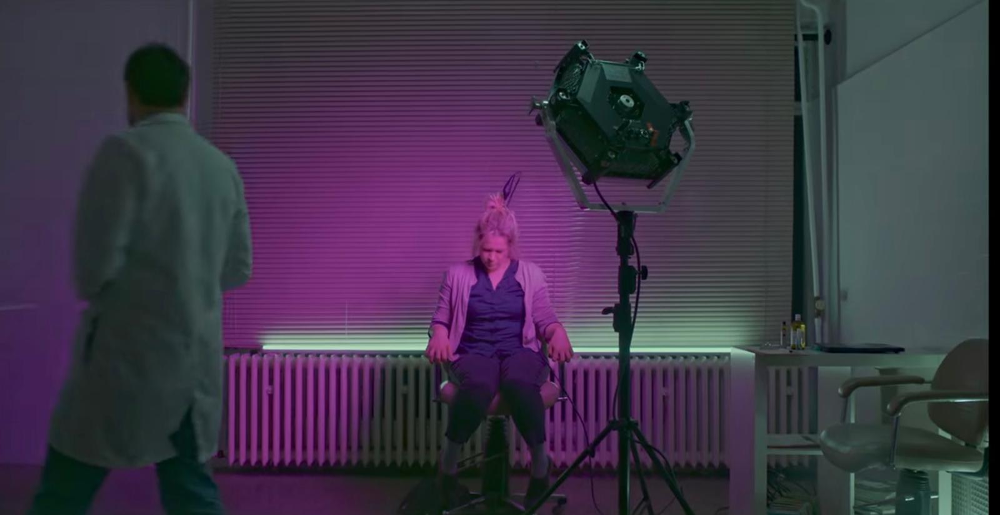
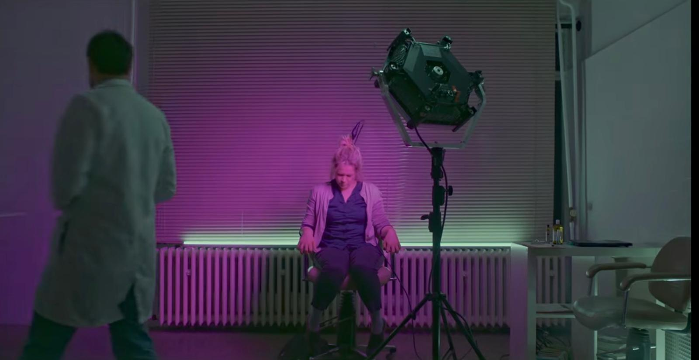
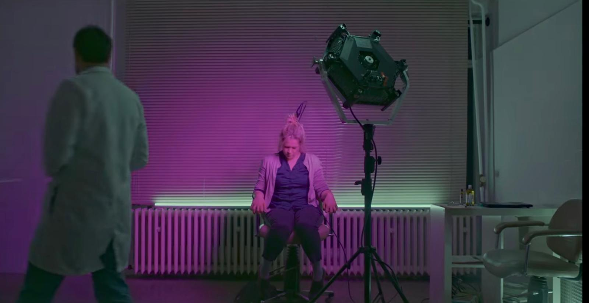

 


Prototype
This short film has an official story involving neuroscience, emotions, and inner powers. The unofficial version is that I was testing Astera tubes and a Sumo light prototype and liked what they did to the space. I shaped the images first. The narrative followed.
Click ↻ again to return